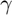
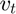
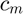
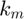

Theoretical model of BER #2
Obtains the BER value in function of the SNR and modulation scheme.
Contents
Syntax
BER = model_ER2(SNR, M, r)
Description
The model_BER2(SNR, M, r) function performs the calculation of the BER according to a value of SNR. The second theorical model of BER considers a value of Eb/No by OFDM symbol. To transform the Eb/No to SNR considering the modulation scheme and the portion of the OFDM symbol corresponding to the cyclic prefix the equation below is used:

With (s) being the SNR value,  the transmission speed in Mbps and m the number of bits per symbol of modulation (BPSK, QPSK, 16QAM, 64QAM). For the different modulation schemes, the BER formulas that are used in the model_BER2() are the following.

Q(') is the function Q defined by equation:

Input Arguments
- SNR
SNR value.
- M
Modulation scheme.
- r
Coding rate.
Output arguments
- BER
Calculated BER value.
Examples
The model_BER2(SNR, M, r) function is called.
function BER = model_BER2(SNR, M, r)
The values are defined based on the modulation scheme. The table of constants  and  also is based on the modulation scheme, where the first column represents the value of and the second one the value of . Also each row correspond to BPSK, QPSK, 16-QAM and 64-QAM, respectively.
m = log2(M);
v = 6*m*r;
c = [ 1 2;
1 1;
3/4 1/5;
7/12 1/21;
];
The value of (s) is calculated with the formula below.
gamma = (8*m/v) * SNR;
The values of the constants are chosen depending on the modulation scheme.
switch M case 2 f=1; case 4 f=2; case 16 f=3; case 64 f=4; end
Assignment of and constants.
cm = c(f,1);
km = c(f,2);
The BER is calculated with the corresponding formula.
BER = cm*qfunc(sqrt(km*gamma));
end
See also